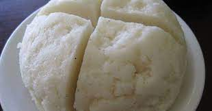

Ugali, a recipe

Ugali is the staple diet of the indigenous people of East Africa, made
from maize flour.
It is generally served as a side - the perfect accompaniment for stews,
curries, or veggie dishes.
Ingredients
- 2 cups of water
- 1 1⁄2 cups medium or coarse-ground white cornmeal
Steps
- Bring the water to boil in a medium saucepan
- Reduce the heat to low, and stirring constantly with a whisk, slowly add
the cornmeal to the boiling water. The ugali will begin to thicken quite quickly.
- Continue cooking on low heat, stirring every minute or so with a sturdy wooden spoon, until the
ugali begins to pull away from the sides of the pan and hold together, and takes on the aroma
of roasted corn. Turn it out immediately onto a serving plate. If you would like, using a spoon
or spatula, quickly shape it into a thick disk or round.
- The ugali will continue to first as it cools, and will be thick enough to cut with a knife
(similar to first polenta)
- Serve it up with Kenyan Beef Curry or your favorite savory stew.